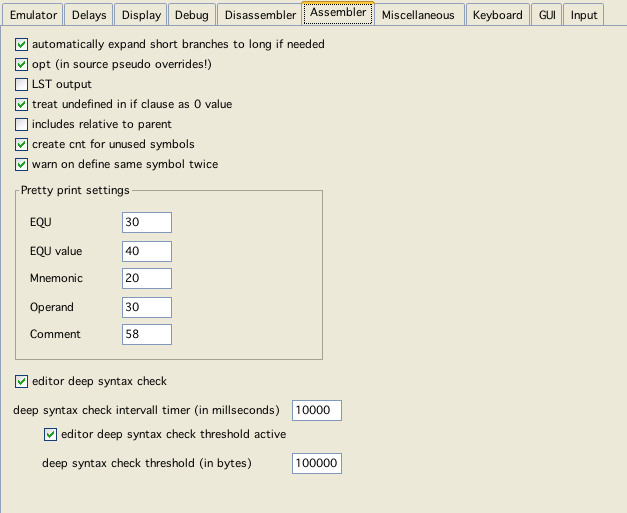

pretty print settings

assembler config
automatically expand short branches to long if needed
Well - what the option says.
Note:
As of yet assi is a two pass assembler, and I have not changed its architecture all that much (yet). Because of that it is not possible to expand branches (to that point) to unkown locations. Expanding short to long branches therefor only works with branches "backward" not forward. If an expansion forward is necessary assi quits with an error and tells you where the branch should be expanded!
opt
Tells assi to use optimization (what little is implemented).
Note:
The "opt" pseudo opcode not only overwrites this setting it also SETS this very setting in the config. If you use "opt" in your sources, than the last use of "opt" (or noopt) is the new "config-setting" as well!
LST output
List output takes (in relation to actually doing the assembly) a little bit of time. Therefor you can switch the generation off.
treat undefined in if clause as 0 value
This is actually a compatabilty option to AS09.
includes relative to parent
Whether the search path to includes is relative to the project file, or relative to the parent (including) file.
create cnt for unused symbols
Whether assi should create label information even for labels which are not explicitly used within the source code.
warn on define same symbol twice
Whether assi should issue a warning if two labels are defined twice. Even if switched on assi will only warn if the definitions are different. If switched on - and you need it temporarily switched of, you can comment the line defining a label with "; #noDoubleWarn" than the warning will only be switched of for that line.
Pretty print tabs (vedi)
pretty print settings
Editor deep syntax check
These bundle of options actually is more related to the editor (Vedi). But these configurations only take effect, when editing assembler sources - so...
Vedi usually scans all known (or reachable) sources for variable, macro and function definitions. Editing large files (100KB IS large for an assemblersource for vectrex!) - this may slow things down. These configurations help to keep the impact of scanning to a minimum.
If you happen to frequently edit large fiels:
in general allow deep syntax check
deep syntax check intervall timer
This is the time in millisecods that Vedi waits to do the above mentioned syntax check
threshold active
If enabled, vedi does no deep syntax for files larger than a given size...
deep syntax check threshold
Even if above threshold is enabled, Vedi does no syntax check for files larger than the given bytecount.
This option also relates to the option described under Miscellaneous "scan for defined...".